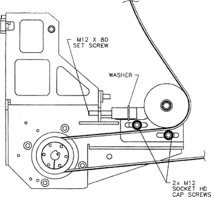

Operating Documentation
Direction 5193855-800, Rev# 4
LS 5.X RT Ltd. Access Service Information Adv
Operating Documentation |
| Required Persons | Preliminary Reqs | Procedure | Finalization |
|---|---|---|---|
| 1 | Timing Not Applicable | 60 mins | Timing Not Applicable |
Refer to Illustration 1 for this procedure.
Illustration 1: HP Gantry Belt

| Last Revised: | 08 April, 2004 |
| CRUSH HAZARD. | |
| UNEXPECTED GANTRY ROTATION CAN CAUSE SERIOUS INJURY. | |
| Never service the gantry with the axial drive enabled. Use the gantry rotation lock to lock out gantry rotation. See safety menu of Service Document gui for appropriate procedures. |
| POTENTIAL FOR SHOCK | |
| VOLTAGE MAY BE PRESENT. | |
| Use proper lockout/tagout procedures before Servicing components. See safety menu of Service Document gui for appropriate procedures. |
| CRUSH HAZARD. | |
| UNEXPECTED GANTRY ROTATION CAN CAUSE SERIOUS INJURY. | |
| Never service the gantry with the axial drive enabled. Use the gantry rotation lock to lock out gantry rotation. See safety menu of Service Document gui for appropriate procedures. |
| POTENTIAL FOR SHOCK | |
| VOLTAGE MAY BE PRESENT. | |
| Use proper lockout/tagout procedures before Servicing components. See safety menu of Service Document gui for appropriate procedures. |
Locate the LOTO equipment and lock out the A1 breaker. Lock the gantry to prevent gantry rotation.
Remove the Gantry sides, and rear cover. Follower the cover removal procedures found in the installation manual book 1 appendix.
You may need to remove the bottom slip ring cover, as well as the side safety cover on the bottom left to gain access to the belt assembly.
After you have gained access to the belt assembly, loosen the 2 -M12 socket head cap screws just enough to allow the pulley assembly to slide freely- left to right.
Tighten the M12 set screw until the flat washer no longer spins freely.
Then, loosen the M12 set screw just enough that the flat washer spins with some resistance.
Release gantry rotation lock and carefully rotate the gantry clockwise by hand several times to ensure that the belt is tracking properly and that the tension is correct. ( the washer spins with some resistance) This may require several times for the belt to stretch and seat.
When finished, tighten the 2- M 12 socket head cap screws to the recommended torque value of 50 ft lb.
Check that the gantry rotation lock is released and replace all removed covers and guards security. Follow all torque recommendations.
Remove the LOTO device and power on the system. Run test scans to determine if the gantry belt tension is set correctly without errors.
No finalization required.